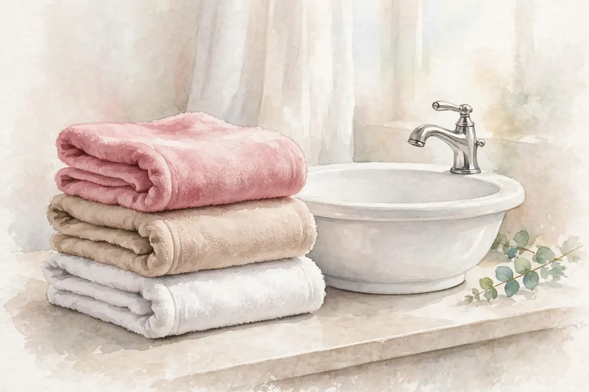

トップ ＞ スキンケア ＞ 洗顔後のタオルの使い方と交換の目安
洗顔後のタオルの使い方と交換の目安

洗顔の仕上げは、タオルで顔を押さえる瞬間です。せっかく丁寧に洗っても、拭き方ひとつで肌への触れ方は変わります。施術の現場では、タオルの扱いは衛生管理の中心です。この記事では、家庭でのタオルの使い方と交換の目安を整理します。
拭き方は「押さえる」が基本
洗顔後の肌は、水分を含んでやわらかい状態です。タオルを左右に動かしてこすると、そのぶん摩擦が増えます。基本は、タオルを顔に当てて軽く押さえ、水分をタオル側に移す動きです。額、頬、あご、と場所を移しながら押さえていくと、全体の水分が取れます。
完全に乾かし切る必要はありません。うっすら湿り気が残るくらいで止めて、そのまま化粧水の手順に移ると、時間も短縮できます。ゴシゴシと音がする拭き方になっていたら、力の入れすぎの合図です。
顔用は分ける、が衛生の基本
顔に使うタオルは、体用や手拭き用とは分けるのが基本です。家族との共用も避け、一人一人の顔用を決めておきます。色や柄で見分けられるようにしておくと、洗濯後の仕分けも簡単です。施術では、お客様ごとにタオルを替えるのが当然の前提であり、その考え方は家庭でも同じです。
使用後のタオルは、濡れたまま洗濯かごに重ねて置かず、一度干してから洗うとにおいが残りにくくなります。小さな習慣ですが、タオルの状態を保つうえで差が出るところです。
交換の目安は、手触りとにおい
タオルの交換時期は、期間より状態で判断します。洗っても手触りがごわつく、水を吸いにくくなった、乾いた状態でもにおいが残る。こうした変化が目安です。顔用は肌に直接触れるものなので、体用より早めの交換を意識してもいいでしょう。
新しいタオルは、使い始めの数回は繊維が落ちやすいので、単独で洗ってから使い始めるのがおすすめです。タオルは毎日使う道具です。道具の状態が、ケアの心地よさを支えています。
替えの枚数とローテーションの決め方
顔用タオルは、洗濯の頻度に合わせて、回せるだけの枚数を用意しておくのが基本です。毎日洗濯する家庭と、数日に一度の家庭では、必要な枚数が変わります。足りなくなると、つい体用と兼用にしてしまうので、枚数の余裕が衛生の余裕になります。
ローテーションでは、同じタオルばかりが先に傷まないよう、順番に使う工夫もできます。干す場所を決め、使った順に奥から取る、といった単純なルールで十分です。タオルの管理は、洗顔の手順の外側にある、静かな土台の仕事です。
旅先やジムでは、持参のタオルを使う場面もあります。顔用として使うタオルは、荷物の中でも清潔な状態を保てるよう、専用の袋に入れて分けておくと安心です。使い終わったタオルは、乾かしてからしまうのが基本で、濡れたまま袋に入れるとにおいの原因になります。
タオルの手触りの好みは、人によって分かれます。厚手で水分をよく吸うもの、薄手で乾きの速いもの。自分の生活の洗濯サイクルと合わせて選ぶと、管理が楽になります。道具選びは、生活の設計の一部です。
タオルの素材や織り方も、手触りの好みに関係します。パイルの長いものは水分をよく含み、短いものは乾きが速い傾向があります。どちらが正しいということではなく、自分の洗濯の回し方と、干す環境に合うものを選ぶことが大切です。
顔用タオルを新しくするときは、数枚をまとめて入れ替える方法と、1枚ずつ替える方法があります。まとめて替えると管理は簡単ですが、支出は一度に増えます。予算の配分と相談しながら、自分の家庭の形を選んでください。
タオルは、洗顔の最後に触れる道具です。その手触りが心地よいことは、ケア全体の満足感にもつながります。道具の心地よさも、ケアの質の一部なのです。
セラフィナ「タオルは押さえるように使うんだね。交換の目安も決めておこう」